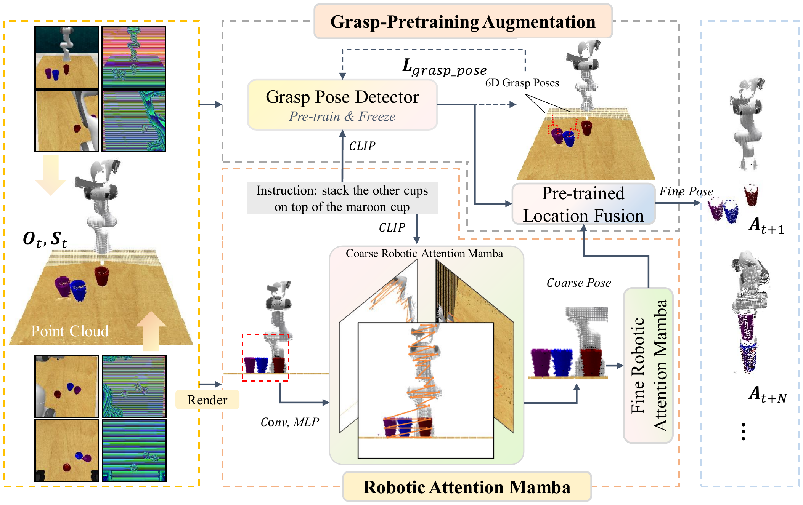
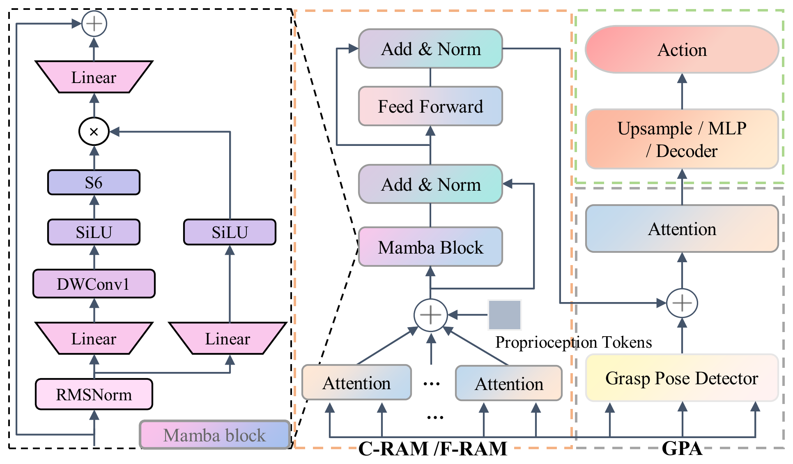

Overview
Abstract
Fine-grained robotic manipulation often fails when inaccurate initial grasps propagate errors and necessitate complex pose correction. We propose Grasp-Pretraining Augmentation (GPA), which incorporates grasp priors from task demonstrations into imitation policies without additional grasp-pose data or annotation. When added to RVT2, GPA raises the average success rate on RLBench from 79.3% to 84.2%. When added to ACT, it raises success on ALOHA cube transfer and bimanual insertion from 86% and 16% to 98% and 38%, respectively. To offset added computational costs, we develop Robotic Attention Mamba (RAM) for real-time deployment. RAM combines attention-based spatial feature extraction with state-space modeling to capture long-range dependencies efficiently. The resulting GPA-RAM framework supports discrete keyframe prediction and continuous action generation. We evaluate it on four platforms, including physical UR5 and ARX R5 systems. GPA-RAM achieves an average success rate of 87.5% on RLBench, outperforming RVT2 and ARP+ by 8.2 and 2.6 percentage points, respectively. On ALOHA, it achieves 98% success in cube transfer and 56% in bimanual insertion, improvements of 12 and 40 percentage points over ACT, while operating at approximately 71 frames per second. These results demonstrate that GPA-RAM combines precise manipulation with efficient real-time robotic execution.
Method
Grasp precision meets efficient spatial reasoning
GPA transfers grasp-pose priors already present in demonstrations, while RAM combines per-view attention with linear-time state-space modeling for responsive action generation.

Grasp-Pretraining Augmentation
GPA pretrains a grasp-pose detector using grasp configurations already contained in expert demonstrations. The frozen feature backbone supplies explicit grasp-sensitive cues without extra data collection or manual pose annotation.
Robotic Attention Mamba
RAM retains attention for view-specific feature interaction and uses Mamba blocks to capture long-range dependencies with linear sequence complexity, enabling fast discrete and continuous policies.

Simulation
RLBench multi-task manipulation
GPA-RAM reaches 87.5% average success over 18 tasks and a best average rank of 2.28, while improving grasp-sensitive tasks such as insert peg, stack cups, and sort shape.
Close Jar: close the red jar.
Sort Shape: place the target shape in the sorter.
Reach and Drag: use the stick to move the cube to the target.
Continuous control
ALOHA bimanual manipulation
GPA-RAM improves ACT by 12 points on cube transfer and 40 points on bimanual insertion, while running at approximately 71 FPS.
Bimanual insertion rollout 1.
Cube transfer rollout 1.
Physical robots
UR5 and ARX R5 experiments
The real-world evaluation covers seven discrete UR5 tasks and three continuous dual-arm ARX R5 tasks with unseen object configurations.
Place a block into the drawer - rollout 1.
Discrete UR5 tasks
| Task | RVT2 | ARP+ | GPA-RAM |
|---|---|---|---|
| Cylindrical block | 70% | 90% | 100% |
| Quadrangular block | 70% | 80% | 90% |
| Hexagonal block | 80% | 90% | 100% |
| Middle shelf | 60% | 80% | 90% |
| Top shelf | 60% | 80% | 80% |
| Round insertion | 50% | 50% | 70% |
| Square insertion | 30% | 40% | 50% |
Continuous ARX R5 tasks
| Task | ACT | RAM | GPA-RAM |
|---|---|---|---|
| Plate transferring | 80% | 90% | 100% |
| Tabletop organization | 70% | 80% | 90% |
| Bowl stacking | 60% | 80% | 90% |
Reference
Citation
@misc{sheng2025gparam,
title = {GPA-RAM: Grasp-Pretraining Augmented Robotic Attention Mamba for Spatial Task Learning},
author = {Sheng, Juyi and Liu, Yangjun and Xu, Sheng and Yang, Zhixin and Xu, Tiantian and Liu, Mengyuan},
year = {2025},
eprint = {2504.19683},
archivePrefix = {arXiv},
url = {https://arxiv.org/abs/2504.19683}
}